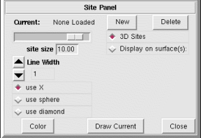

NVIZ Reference Manual
CONTENTS
Vector Points Panel
The Vector Points panel controls how sites (vector points)
are displayed.
-

OPTIONS
- Current
- Shows the name(s) of all the loaded points files. You can use this menu to
select a new current points file.
- New
- Loads a new vector points file.
- Delete
- Deletes (unload) the current points file.
- Site Size
- Sets the size of the current points file markers.
- Line Width
- Sets the width (in pixels) of the line used to draw the site markers.
(Only applies to wire-frame markers)
There are a number of markers available for displaying vector points:
-
- use X
- Sets the current points file markers to a 2D "X".
- use sphere
- Sets the current points file markers to a solid sphere.
- use diamond
- Sets the current points file markers to a solid diamond.
- use cube
- Sets the current points file markers to a solid cube.
- use wire-frame box
- Sets the current points file markers to a hollow cube.
- use gyroscope
- Sets the current points file markers to a hollow sphere.
- use 3D asterisk
- Sets the current points file markers to a 3D line-star.
- 3D Points
- Displays the site markers at an elevation obtained from the Z dimension
of the 3D points file. Your selected points file must be in a
GRASS 3D vector points format for this option to work.
- Display on surface(s)
- Draws the current points file draped over the selected surface(s).
A list of available surfaces appears directly below Display on
surface(s).
- Color
- Sets the color of the current points file markers.
- Draw Current
- Draws the current points file.
- Close
- Closes the Vector Points panel.